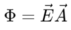
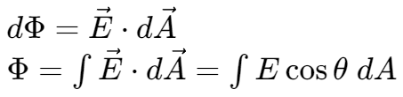
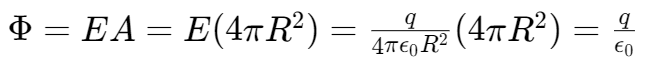
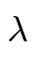
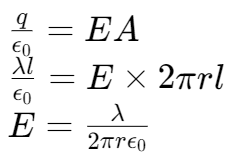
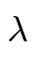

电通量 & 高斯定律 | Electric Flux & Gauss's Law
电通量 | Electric Flux


高斯定律 | Gauss's Law
对于一个点电荷，取以该点为球心，半径为 R 的球面为高斯面，其电通量

对于一条具有电荷密度  的无限长直导线，取圆柱体作为高斯面。由于延导线方向的电场分量抵消，故只需计算圆柱体侧面积。

对于一个点电荷，取以该点为球心，半径为 R 的球面为高斯面，其电通量
对于一条具有电荷密度  的无限长直导线，取圆柱体作为高斯面。由于延导线方向的电场分量抵消，故只需计算圆柱体侧面积。